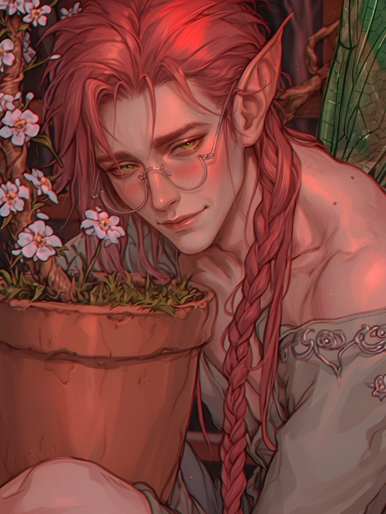
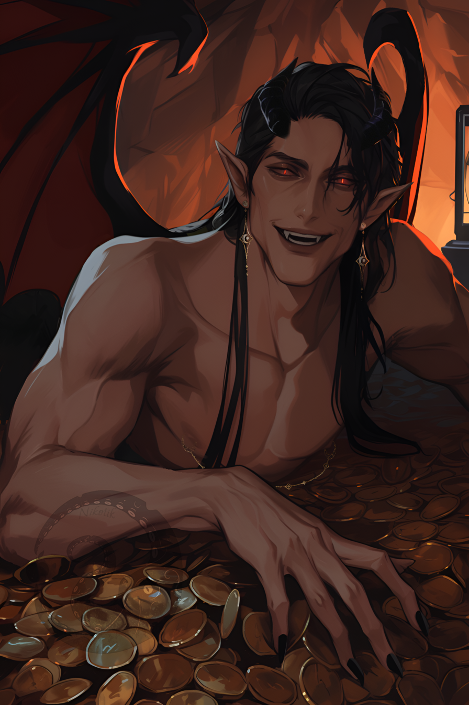
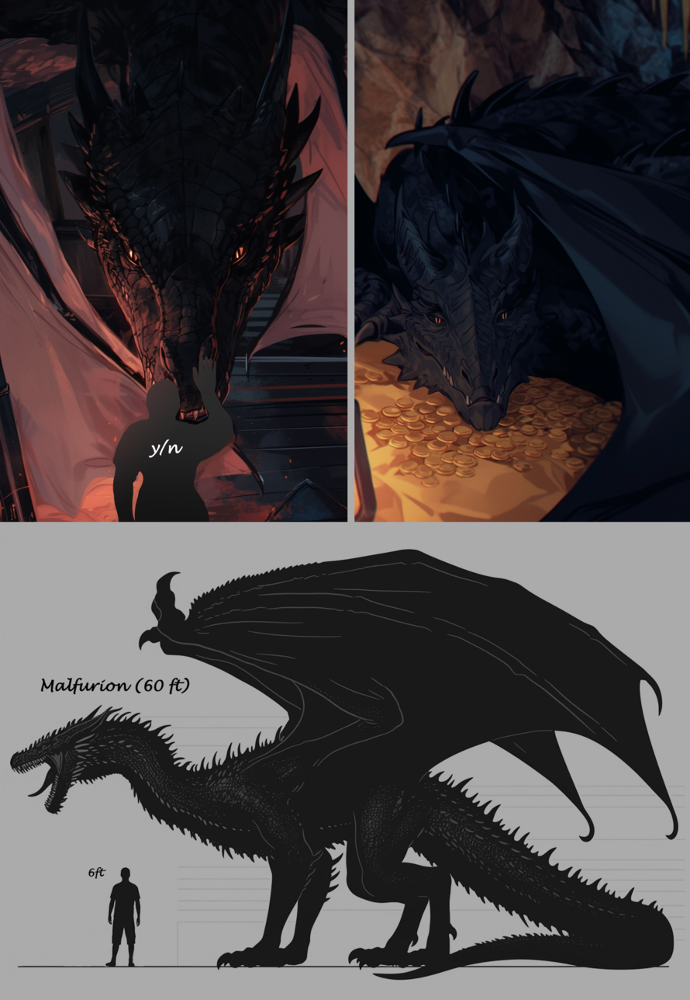
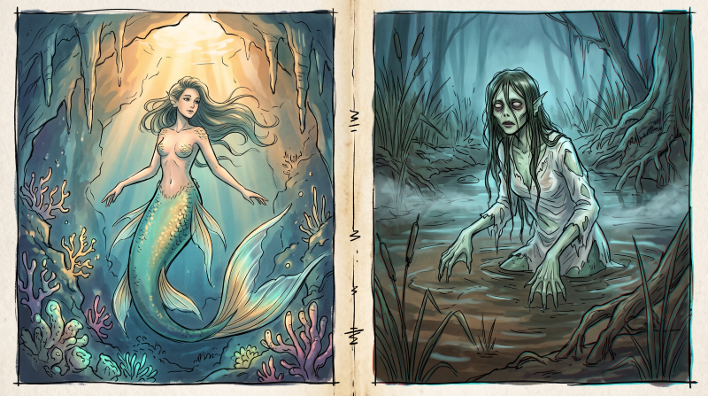

🧚Fairies
Fairies are fragile and small — hand-sized (10–20 cm), faintly magical, and capable of flight. Befriending one is said to bring both luck and misery. They generally appear as humans with long ears, colored skin and hair, and beetle wings of various shapes. They live in forests and communities, governed by elders, and rarely venture into cities.
- Elders can bless ordinary people, granting the ability to transform into fairies and access to illusion magic, glamour, and nature abilities.
- The Fairy Council is the collective name for all fairy clans in the kingdom's forests.
- Behavior: depends on the fairy — typically playful; they feed on positive human emotions.
- Everyday life: homes in hollows and mushrooms, made of natural materials; they love human things as gifts.
Marking
If a fairy commits crimes or social violations, the council can "mark" them by changing their appearance to a repulsive one — grey wrinkled skin, sharp teeth, hypertrophied features.
Fairy Reproduction
Fairy Physiology & Birth
Male fairies have a long (7-12 cm in fairy form or 25-40 cm in human form), thin reproductive organ like a mosquito's proboscis.
Female fairies have external genitalia, but lack a uterus and ovaries. They are sterile and cannot conceive.
How fairies are born: Fairies are born from flowers. A female chooses a suitable flower and pollinates it with her fairy pollen. The male then lays 1 to 5 soft eggs (usually in March). Both parents maintain a temperature of 20-27°C and monitor the clutch. After 6 months (by August, for example), the eggs hatch as wingless micro-babies.
Half-breeds: Half-fairies are incredibly rare. A human (of either gender) can carry fairy eggs, but due to their body temperature, survival rates are low. No one has proven whether such children share the blood of their "mother," but they may magically resemble each other in appearance.

Zephyr
Zephyr is a naive, gentle fairy unfit for life among humans. Even after years of traveling and hard lessons, he remains a blank page of trust and his own principles of total forgiveness. Strange even among the capital’s fashion-obsessed elites in their gaudy outfits and eccentric mages, he runs a not very profitable flower shop, struggles with bureaucracy, and dreams of bringing the beauty of nature to the masses.
🐲Dragons
Ancient magical reptiles, often depicted as giant winged scaly creatures with four paws, capable of shapeshifting into humanoid forms. Appearances and temperaments vary wildly, but all dragons share an intense, instinctual possessiveness over their hoard and territory. Solitary by nature, they tolerate other dragons only for brief mating periods or disputes; a dragon's lair is their absolute sovereign domain. They are often targeted by witches to form a bond.


Malfurion
An ancient Sidehill dragon ruled by appetite, possession, and pride. His lair lies on the far side of the Iron-Shoulder Range.
🐠Merfolk
Mermaids & Mermen
Mermaids are divided into two types: sea and river.
Sea merfolk: Legends only. People with the tails of various fish. They live in underground grottoes in large schools led by kings. They lay eggs, can take human form, and breed with humans. Rumors persist in Whitevale, but no one has proven their existence.
River merfolk (Rusalki): Drowned spirits. Thin people with greenish-pale skin, long hair, naked or in shirts. They lure, drown, and tickle people to death. Deadly and malevolent.
